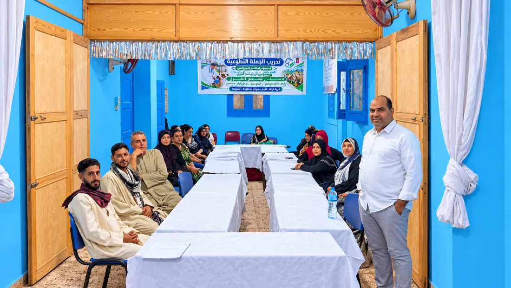

تنمية ورعاية الثروة الحيوانية
برنامج التدريب البيطري للتمويل التشاركي
بالشراكة مع مؤسسة ساويرس للتنمية الاجتماعية في مراكز وقرى محافظة أسيوط، تدريب وتأهيل أكثر من 1,000 مستفيد لإدارة مشروعات الثروة الحيوانية بكفاءة واستدامة.
تفاصيل المشروع